IBIC 2025 and three collaborative conference papers
Hi, I'm Qiyuan (Andrew) Xu — I use AI/ML to solve computer vision problems in physics



Project Associate, Beam Instrumentation Group, CERN
2024-2026

MSc in Artificial Intelligence, School of Informatics, University of Edinburgh
2019-2020

BEng in Electrical Engineering, Xi'an Jiaotong-Liverpool University
2013–2017
News

Projects

XFlow
– minimal, modular machine-learning framework for scientific workflows